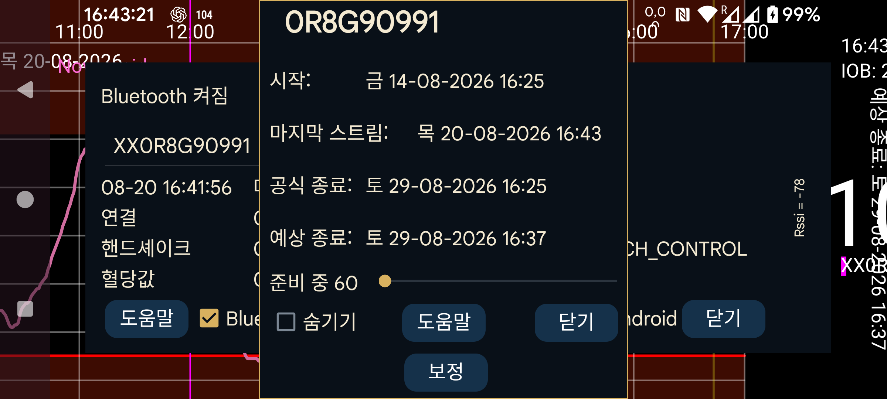

센서의 시작 시각, 마지막 스트림, 마지막 스캔, 예상 종료 시각 및 공식 종료 시각을 표시합니다.
준비 시간: Sibionics 및 Linx/Lumiflex/Aidex X 센서에서 준비 기간의 분 수를 변경할 수 있습니다. 화면 곡선, 통계, 내보낸 데이터 및 웹 서버에 표시되는 데이터 등 모든 기능은 준비 기간의 데이터를 무시합니다. 이미 지난 데이터에도 소급 적용됩니다.
숨기기: 선택하면 곡선을 숨깁니다. 선택을 해제하는 것 외에도 화면 오른쪽 아래의 “표시”를 눌러 곡선을 다시 보이게 할 수 있습니다.
보정: 왼쪽 메뉴→설정→보정에서 혈당 레이블을 지정하고, 왼쪽 가운데 메뉴→새 입력값에서 제외하지 않은 혈당 측정값을 입력했다면 “보정” 버튼을 눌러 적용된 보정 목록을 볼 수 있습니다. 참조: https://www.juggluco.nl/Juggluco/index.html#calibration
활성화: 종료된 센서에는 “활성화” 버튼이 표시됩니다. 이 버튼을 누르면 포장의 데이터 매트릭스를 다시 스캔하지 않고 센서를 다시 사용할 수 있습니다. Libre 2 및 3 센서에서도 사용할 수 있지만, 다른 휴대전화의 Juggluco로 센서를 스캔했다면 센서를 되찾기 위해 항상 NFC로 다시 스캔해야 합니다.